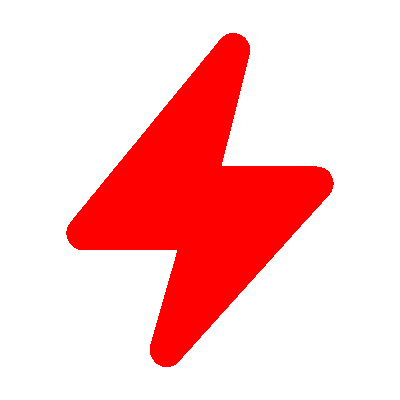

Build Projects and Automate any Tasks Using Plain Java or Kotlin
Share Build Logic and Delivery Processes across Projects
Run and Debug in IDE - Execute Anywhere
Just Plain Java or Kotlin
No need for XML, fragile scripting, or DSLs.
JeKa allows to build projects and implement pipelines, just using
plain Java or Kotlin classes that can be easily run and debugged in an IDE.
Rich Features
In addition to its scripting capabilities and utilities, JeKa features a complete build
tool with support for dependency management, IntelliJ, Eclipse, Git, Spring-Boot, NodeJs,
Sonarqube, Jacoco, OpenApi, Docker/Kubernetes and more.
Designed for Extension
JeKa is built on a simple yet powerful plugin architecture, allowing plugins to extend
each other.
Nevertheless, it doesn't require writing specific plugins to integrate third-party
technologies, as it can seamlessly integrate with any tool providing a Java library or a
command-line interface.
User Friendly
JeKa prioritizes simplicity by utilizing basic idioms instead of enforcing frameworks or
using complex concepts.
Its transparent design ensures that executed code is straightforward to navigate and
debug.
Additionally, JeKa heavily relies on conventions to minimize the need for manual
configuration
Documentation
JeKa offers resources like tutorials, reference guides, and examples that are kept
up-to-date with its evolution.
Additionally, it has a command-line help feature that utilizes class introspection, making
it easy for users to document their code with minimal effort.

Open Source
Apache 2.0 License.
See In Action
Write Scripts in Java, Execute Sources from Command
Line
Build Programmatically Projects involving Spring-Boot,
Jacoco,
Sonarqube, and friends